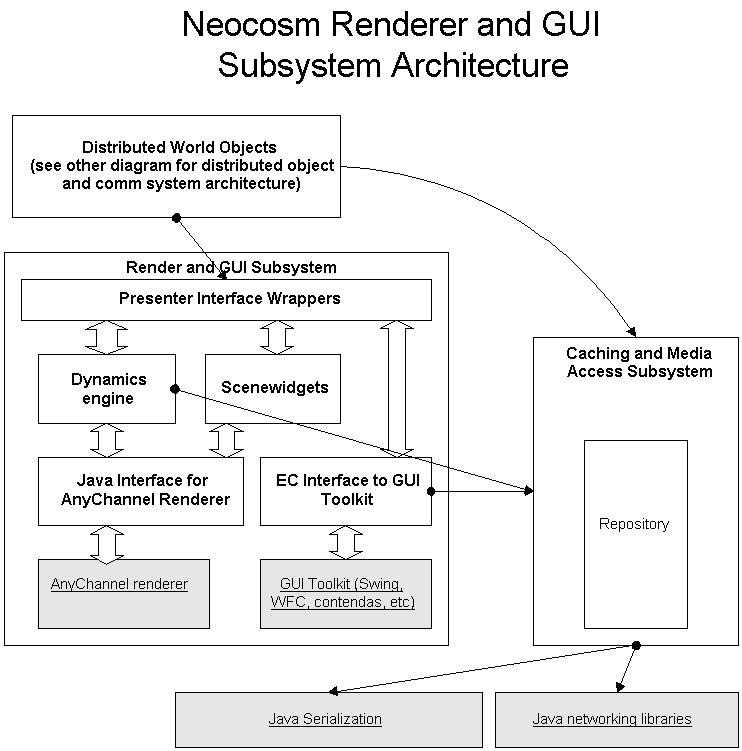

Neocosm GUI and Renderer Architecture
Last Updated: 06/02/98
Author: Everyone. Started by slewis@communities.com
Introduction
Here is a link back to the top-level
Neocosm architecture page.
This is a page to provide a high-level overview of our graphical rendering
and GUI interface subsystem. Here is an initial architecture diagram:

Subsystems:
Distributed World Objects Architecture
Renderer and GUI Subsystem
Presenter Interface Wrappers
Dynamics Engine
Java Interface to AnyChannel Renderer
AnyChannel Renderer
Scene Widgets
EC Interface to GUI Toolkit
GUI Toolkit
Caching and Media Access Subsystem
Java
APIs